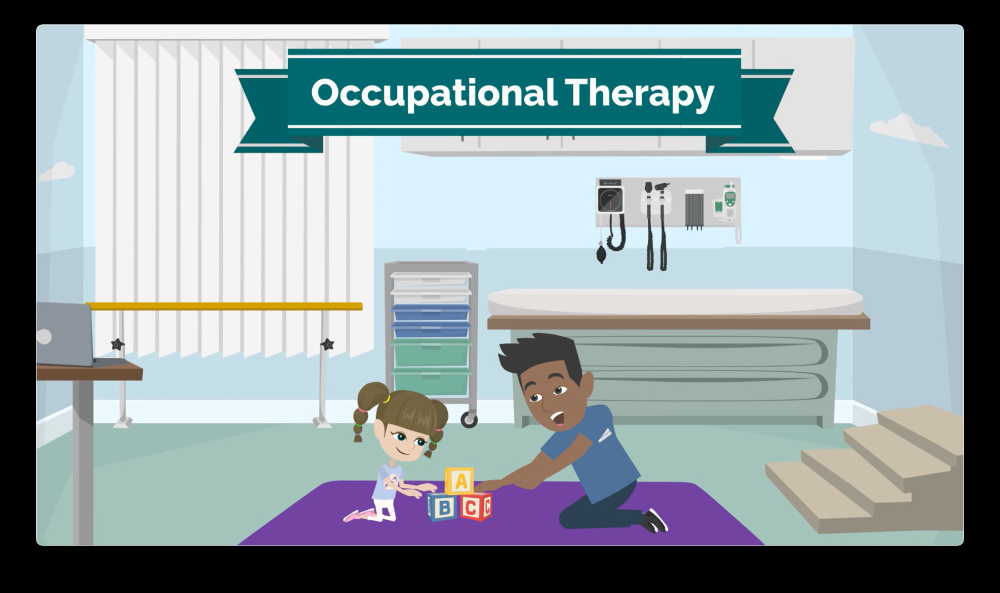

Professional experience
Work projects.
The practical and creative work that shaped how I approach technology and collaboration.
A record of contributions and lessons, with project materials added when cleared for sharing.

University of Nebraska Medical Center · E-Learning Internship
Learning Media & Collaboration at UNMC
At UNMC, I worked with educational animation and interactive learning media, combining visual communication, feedback, teamwork, and technical problem-solving.
Internship project samplesView project ↗
THE COMPLETE COLLECTION